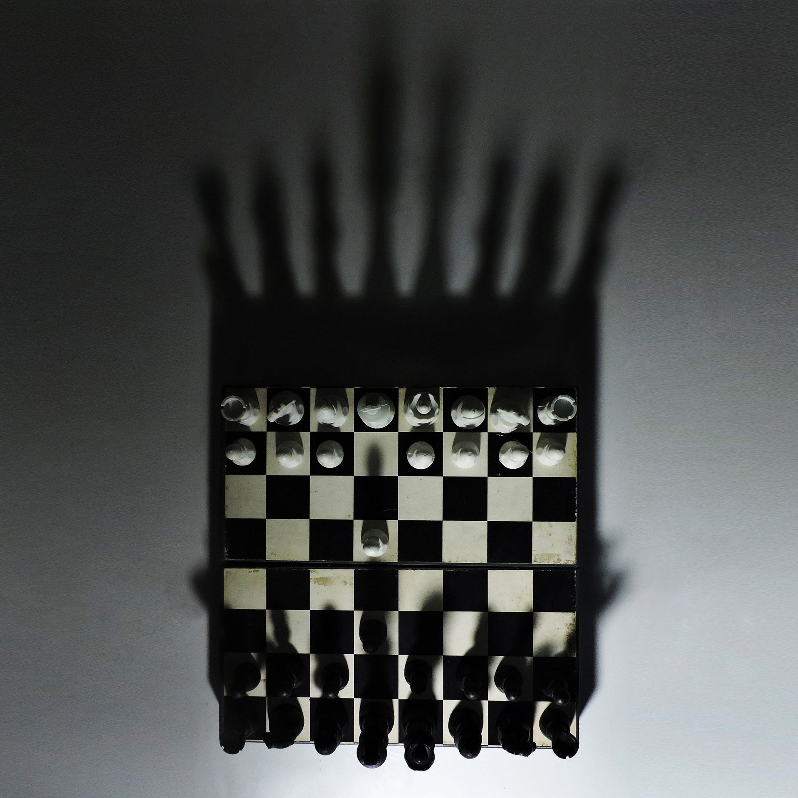

Photography Project
The project was developed for Photography 2, a subject within the Graphic Design program at Unesp Bauru. The photographs were intended to explore composition, focus, and lighting. The project was carried out individually, and the photographs were edited using Adobe Photoshop.


The photos were taken during the pandemic, in 2022, and therefore were taken at home. The lack of space and objects to photograph led to the decision of working with perspective and focal distance on a small scale.